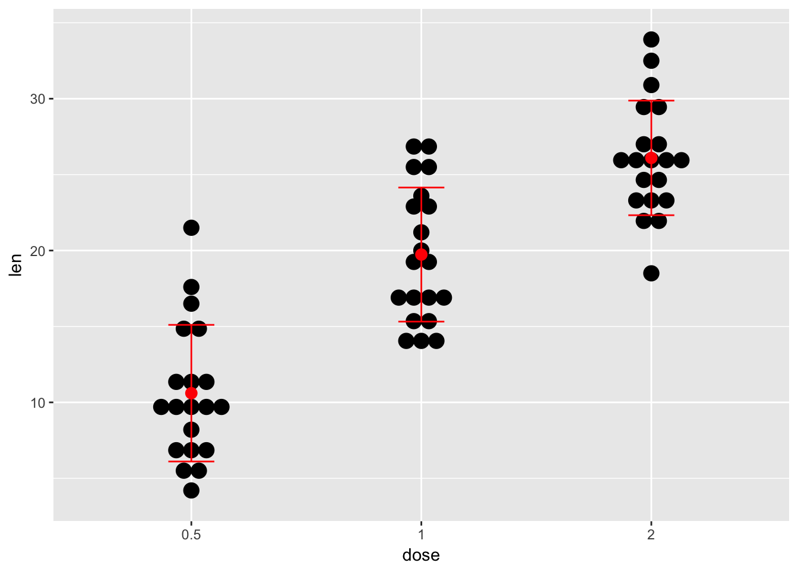
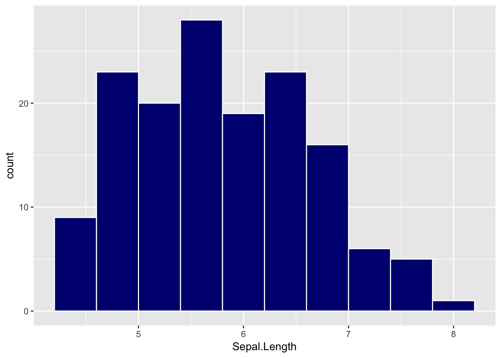
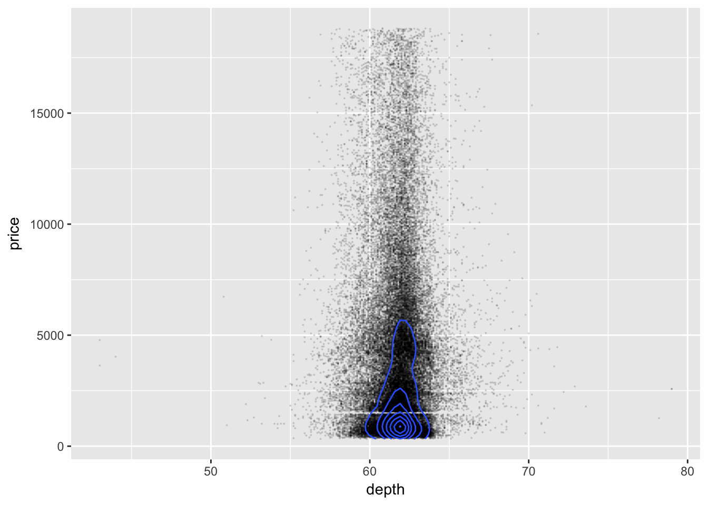

9 2 osa. Kuidas näevad välja teie andmed?
9.1 summaarsed statistikud
Summaarne statistik = üks number.
Milliseid statistikuid arvutada ja milliseid vältida, sõltub statistilisest mudelist
summaarse statistika abil iseloomustame a) tüüpilist valimi liiget (keskmist), b) muutuja sisest varieeruvust, c) erinevate muutujate (pikkus, kaal vms) koos-varieeruvust
9.1.1 keskväärtused
Keskväärtust saab mõõta paaril tosinal erineval viisil, millest järgnevalt kasutame kolme või nelja. Enne kui te arvutama kukute, mõelge järele, miks te soovite keskväärtust teada. Kas teid huvitab valimi tüüpiline liige? Kuidas te sooviksite seda tüüpilisust defineerida? Kas valimi keskmise liikmena või valimi kõige arvukama liikmena? või veel kuidagi? See, millist keskväärtust kasutada sõltub sageli andmejaotuse kujust. Sümmeetrilisi jaotusi on lihtsam iseloomustada ja mitmetipulised jaotused on selles osas kõige kehvemad.
Mina eelistan selliseid nõuandeid (mis on rangelt soovituslikud):
Kui valim on normaaljaotusega (histogramm on sümmeetriline), hinda tüüpilist liiget läbi aritmeetilise keskmise (mean).
Muidu kasuta mediaani (median). Kui valim on liiga väike, et jaotust hinnata (aga > 4), eelista mediaani. Mediaani saamiseks järjestatakse mõõdetud väärtused suuruse järgi ja võetakse selle rea keskmine liige. Mediaan on vähem tundlik ekstreemsete väärtuste (outlierite) suhtes kui mean.
Valimi kõige levinumat esindajat iseloomustab mood ehk jaotuse tipp. Seda on aga raskem täpselt määrata ja mitmetipulisel jaotusel on mitu moodi. Töötamisel posterioorsete jaotustega on mood sageli parim lahendus.
## [1] 0.6817168 Joonis: Simuleeritud lognormaaljaotusega andmed. Punane joon - mood; sinine joon - mediaan; must joon - aritmeetiline keskmine (mean). Milline neist vastab parimini teie intuitsiooniga nende andmete “keskväärtusest”? Miks?
Joonis: Simuleeritud lognormaaljaotusega andmed. Punane joon - mood; sinine joon - mediaan; must joon - aritmeetiline keskmine (mean). Milline neist vastab parimini teie intuitsiooniga nende andmete “keskväärtusest”? Miks?
9.1.2 muutuja sisene varieeruvus
Mean-iga käib kokku standardhälve (SD).
SD on sama ühikuga, mis andmed (ja andmete keskväärtus). Statistikute hulgas eelistatud formaat on mean (SD), mitte mean (+/- SD). 1 SD katab 68% normaaljaotusest, 2 SD – 96% ja 3 SD – 99%. Normaaljaotus langeb servades kiiresti, mis tähendab, et tal on peenikesed sabad ja näiteks 5 SD kaugusel keskmisest paikneb vaid üks punkt miljonist.
Näiteks: inimeste IQ on normaaljaotusega, mean=100, sd=15. See tähendab, et kui sinu IQ=115 (ülikooli astujate keskmine IQ), siis on tõenäosus, et juhuslikult kohatud inimene on sinust nutikam, 18% ((100% - 68%)/2 = 18%).
Kui aga “tegelikul” andmejaotusel on “paks saba” või esinevad outlierid, siis normaaljaotust eeldav mudel tagab ülehinnatud SD ja seega ülehinnatud varieeruvuse. Kui andmed saavad olla ainult positiivsed, siis SD > mean/2 viitab, et andmed ei sobi normaaljaotuse mudeliga (sest mudel ennustab negatiivsete andmete esinemist küllalt suure sagedusega).
Normaaljaotus on defineeritud ka mõnede teiste jaotuste jaoks peale normaaljaotuse
(Poissioni jaotus, binoomjaotus).
Funktsioon sd() ja selle taga olev valem, mis on loodud normaaljaotuse tarbeks,
ja neid alternatiivseid standardhälbeid ei arvuta.
Seega tasub meeles pidada, et tavapärane sd kehtib normaaljaotuse mudeli piirides ja ei kusagil mujal!Kui andmed ei sobi normaaljaotusesse siis võib pakkuda kahte alternatiivset lahendust:
9.1.2.1 (1) logaritmi andmed.
Kui logaritmimine muudab andmed normaalseks, siis saab logaritmitud andmetest arvutada mean-i ja SD ja seejärel mõlemad anti-logaritmida. Sellisel juhul avaldad sa lõpuks geomeetrilise keskmise ja multiplikatiivse SD (multiplikatiivne SD = geom mean x SD; geom mean/SD). Geomeetriline keskmine on alati väiksem kui aritmeetiline keskmine. Lisaks on SD interval nüüd asümmeetriline ja SD on alati > 0. Nagu ennegi, 68% lognormaalsetest andmetest jääb 1SD vahemikku ning 95.5% andmetest jääb 2SD vahemikku.
lognormaalsete andmete tavapärane iseloomustus keskmise ja standardhälbega: mean(sd) on 1.8(1.9). See sd interval on sümmeetriline, ehkki andmete jaotus on vägagi ebasümmeetriline. Lisaks ennustab standardhälve, mis on suurem kui keskväärtus, suure sagedusega negatiivseid väärtusi. Sageli on aga negatiivsed muutuja väärtused võimatud (näiteks nädalas suitsetatud sigarettide arv). See on näide halvast mudelist!
Juhul kui tegu lognormaalsete andmetega on meil võimalus kasutada palju paremat mudelit varieeruvusele - multiplikatiivset standardhälvet:
## # A tibble: 4 x 4
## SD MEAN lower upper
## <chr> <dbl> <dbl> <dbl>
## 1 multiplicative_SD 1.084891 0.4010893 2.934481
## 2 multiplicative_2SD 1.084891 0.1482845 7.937367
## 3 additive_SD 1.857924 -0.9636351 4.679482
## 4 additive_2SD 1.857924 -3.7851938 7.501041Tavalise aritmeetitilise keskmise asemel on meil nüüd geomeetriline keskmine. Võrdluseks on antud ka tavaline (aritmeetiline) keskmine ja (aditiivne) SD. Additiivne SD on selle jaotuse kirjeldamiseks selgelt ebaadekvaatne (vt jaotuse pilti ülalpool ja võrdle mulitplikatiivse SD-ga).
Kuidas aga töötab multiplikatiivne standardhälve normaaljaotusest pärit andmetega? Kui normaalsete andmete peal multiplikatiivse sd rakendamine viib katastroofini, siis pole sel statistikul suurt praktilist kasutusruumi.
set.seed(5363)
norm_andmed <- rnorm(3, 100, 20)
multiplicative_sd(norm_andmed)## # A tibble: 4 x 4
## SD MEAN lower upper
## <chr> <dbl> <dbl> <dbl>
## 1 multiplicative_SD 108.1088 92.80205 125.9403
## 2 multiplicative_2SD 108.1088 79.66252 146.7128
## 3 additive_SD 108.9603 92.08395 125.8367
## 4 additive_2SD 108.9603 75.20756 142.7131Nagu näha, on multiplikatiivse sd kasutamine normaalsete andmetega üsna ohutu (kuigi, ainult niikaua, kuni meil puuduvad negatiivsed andmed). Seega, kui sa ei ole kindel, kas tegu on normaaljaotusega või lognormaaljaotusega, arvesta, et lognormaaljaotus on bioloogias üsna tavaline (eriti ensüümreaktsioonide ja kasvuprotsesside juures). Seega on mõistlik alati kasutada multiplicative_sd() funktsiooni ja kui mõlema SD väärtused on sarnased, siis võib loota, et andmed on normaalsed ning saab avaldada tavapärase additiivse SD refereede rõõmuks.
kui n < 10, siis mõlemad SD-d alahindavad tehnilistel põhjustel tegelikku sd-d. Ettevaatust väikeste valimitega!
9.1.2.2 (2) iseloomusta andmeid algses skaalas: median (MAD).
MAD –– median absolute deviation — on vähem tundlik outlierite suhtes ja ei eelda normaaljaotust. Puuduseks on, et MAD ei oma tõlgendust, mille kohaselt ta hõlmaks kindlat protsenti populatsiooni või valimi andmejaotusest. Seevastu sd puhul võime olla kindlad, et isegi kõige hullema jaotuse korral jäävad vähemalt 75% andmetest 2 SD piiridesse.
mad(andmed, constant = 1)## [1] 0.5950562 Ära kunagi avalda andmeid vormis: mean (MAD) või median (SD).
Korrektne vorm on mean(SD) või median(MAD).9.1.3 muutujate koos-varieeruvus
Andmete koos-varieeruvust mõõdetakse korrelatsiooni abil. Tulemuseks on üks number - korrelatsioonikordaja r, mis varieerub -1 ja 1 vahel.
r = 0 – kahte tüüpi mõõtmised (x=pikkus, y=kaal) samadest mõõteobjektidest varieeruvad üksteisest sõltumatult.
r = 1: kui ühe muutuja väärtus kasvab, kasvab ka teise muutuja väärtus alati täpselt samas proportsioonis.
r = -1: kui ühe muutuja väärtus kasvab, kahaneb teise muutuja väärtus alati täpselt samas proportsioonis. Kui r on -1 või 1, saame me x väärtust teades täpselt ennustada y väärtuse (ja vastupidi, teades y väärrust saame täpselt ennustada x väärtuse).
Kuidas tõlgendame aga tulemust r = 0.9? Mitte kuidagi. Selle asemel tõlgendame r2 = 0.9**2 = 0.81 – mis tähendab, et x-i varieeruvus suudab seletada 81% y varieeruvusest ja vastupidi, et Y-i varieeruvus suudab seletada 81% X-i varieeruvusest.
#correlation<-cor.test(iris$Sepal.Length, iris$Sepal.Width, na.rm=T, method = "pearson") # a list of 9
#names(correlation)
#str(correlation)
#correlation$conf.int
cor(iris$Sepal.Length, iris$Sepal.Width, use="complete.obs") ## [1] -0.1175698Korrelatsioonikordaja väärtus sõltub mitte ainult andmete koos-varieeruvusest vaid ka andmete ulatusest. Suurema ulatusega andmed X ja/või Y teljel annavad keskeltläbi 0-st kaugemal oleva korrelatsioonikordaja. Selle pärast sobib korrelatsioon halvasti näiteks korduskatsete kooskõla mõõtmiseks.
Lisaks, korrelatsioonikordaja mõõdab vaid andmete lineaarset koos-varieeruvust: kui andmed koos-varieeruvad mitte-lineaarselt, siis võivad ka väga tugevad koos-varieeruvused jääda märkamatuks.
Kõik summaarsed statistikud kaotavad enamuse teie andmetes leiduvast infost – see kaotus on õigustatud ainult siis, kui teie poolt valitud statistik iseloomustab hästi andmete sügavamat olemust (näiteks tüüpilist mõõtmistulemust või andmete varieeruvust).
#Kuidas arvutada correlatsioonimaatriksit koos adjusteeritud p väärtustega
#numeric columns only!
print(psych::corr.test(iris[-5], use="complete"), short = FALSE)9.2 2.2 EDA — eksploratoorne andmeanalüüs
Kui ühenumbriline andmete summeerimine täidab eelkõige kokkuvõtliku kommunikatsiooni eesmärki, siis EDA on suunatud teadlasele endale. EDA eesmärk on andmeid eelkõige graafiliselt vaadata, et saada aimu 1) andmete kvaliteedist ja 2) lasta andmetel “sellisena nagu nad on” kõneleda ja sugereerida uudseid teaduslikke hüpoteese. Neid hüpoteese peaks siis testima formaalse statistilise analüüsi abil.
EDA: mida rohkem graafikuid, seda rohkem võimalusi uute mõtete tekkeks!
Kõigepealt vaatame andmeid numbrilise kokkuvõttena:
psych::describe(iris)## vars n mean sd median trimmed mad min max range skew
## Sepal.Length 1 150 5.84 0.83 5.80 5.81 1.04 4.3 7.9 3.6 0.31
## Sepal.Width 2 150 3.06 0.44 3.00 3.04 0.44 2.0 4.4 2.4 0.31
## Petal.Length 3 150 3.76 1.77 4.35 3.76 1.85 1.0 6.9 5.9 -0.27
## Petal.Width 4 150 1.20 0.76 1.30 1.18 1.04 0.1 2.5 2.4 -0.10
## Species* 5 150 2.00 0.82 2.00 2.00 1.48 1.0 3.0 2.0 0.00
## kurtosis se
## Sepal.Length -0.61 0.07
## Sepal.Width 0.14 0.04
## Petal.Length -1.42 0.14
## Petal.Width -1.36 0.06
## Species* -1.52 0.07Millised korrelatsioonid võiksid andmetes esineda?
library(corrgram) #PCA for ordering
corrgram(iris, order=TRUE,
lower.panel = panel.pts,
upper.panel = panel.ellipse,
diag.panel = panel.density,
main="Correlogram of diamond dataset")
9.2.1 Kuidas uurida muutuja sisest varieeruvust
Muutuja - midagi, mida mõõdeti (näiteks mõõteobjektide kaal). Kui iga muutuja kohta on vaid üks number, mida plottida, kasuta Cleveland plotti:
dd <- diamonds %>% group_by(clarity) %>% summarise(number_of_diamonds=n())
dd %>% ggplot(aes(x=number_of_diamonds,
y=reorder(clarity, number_of_diamonds))) +
geom_point(size=3) +
theme_bw() +
theme(panel.grid.major.x = element_blank(),
panel.grid.minor.x = element_blank(),
panel.grid.major.y = element_line(colour="grey60", linetype="dashed")) +
labs(y="clarity")
9.2.1.1 Ploti valik sõltub valimi suurusest.
N < 20 - ploti iga andmepunkt eraldi (stripchart(), plot()) ja keskmine või mediaan.
20 > N > 100: geom_dotplot() histogrammi vaates
N > 100: geom_histogram(), geom_density() — nende abil saab ka 2 kuni 6 jaotust võrrelda
Mitme jaotuse kõrvuti vaatamiseks kui N > 15: geom_boxplot() or, when N > 50, geom_violin(), geom_joy()
ToothGrowth <- ToothGrowth
ToothGrowth$dose <- as.factor(ToothGrowth$dose)
p<-ggplot(ToothGrowth, aes(x=dose, y=len)) +
geom_dotplot(binaxis='y', stackdir='center')
p## `stat_bindot()` using `bins = 30`. Pick better value with `binwidth`.
# Change dotsize and stack ratio, add line or dot for median
ggplot(ToothGrowth, aes(x=dose, y=len)) +
geom_dotplot(binaxis='y', stackdir='center',
stackratio=1.5, dotsize=0.7)+
stat_summary(fun.y = median, geom = "point", shape = 95,
color = "red", size = 15) +
theme_tufte()## `stat_bindot()` using `bins = 30`. Pick better value with `binwidth`.
p + stat_summary(fun.y=median, geom="point", shape=18,
size=5, color="red")## `stat_bindot()` using `bins = 30`. Pick better value with `binwidth`.
#add mean and SD, use pointrange
p + stat_summary(fun.data=mean_sdl, fun.args = list(mult=1),
geom="pointrange", color="red")## `stat_bindot()` using `bins = 30`. Pick better value with `binwidth`.
#use errorbars
p + stat_summary(fun.data=mean_sdl, fun.args = list(mult=1),
geom="errorbar", color="red", width=0.2) +
stat_summary(fun.y=mean, geom="point", size=3, color="red")## `stat_bindot()` using `bins = 30`. Pick better value with `binwidth`.
Use a custom summary function :
# Function to produce summary statistics (geometric mean and multipülicative sd)
multi_sd <- function(x) {
x <- na.omit(x)
a <- log10(x)
b <- mean(a)
c <- sd(a)
g_mean <- 10**b
msd <- 10**c
ymin <- g_mean/msd
ymax <- g_mean * msd
return(c(y = g_mean, ymin = ymin, ymax = ymax))
}
p + stat_summary(fun.data=multi_sd, color="blue", size=1.1) + theme_tufte()## `stat_bindot()` using `bins = 30`. Pick better value with `binwidth`.
# Change dot plot colors by groups
p<-ggplot(ToothGrowth, aes(x=dose, y=len, fill=dose)) +
geom_dotplot(binaxis='y', stackdir='center')
p## `stat_bindot()` using `bins = 30`. Pick better value with `binwidth`.
It is also possible to change manually dot plot colors using the functions :
scale_fill_manual() : to use custom colors
scale_fill_brewer() : to use color palettes from RColorBrewer package
scale_fill_grey() : to use grey color palettes
#Choose which items to display :
p + scale_x_discrete(limits=c("0.5", "2"))## `stat_bindot()` using `bins = 30`. Pick better value with `binwidth`.## Warning: Removed 20 rows containing non-finite values (stat_bindot).
Dotplot kui histogram:
ggplot(iris, aes(Sepal.Length)) + geom_dotplot()## `stat_bindot()` using `bins = 30`. Pick better value with `binwidth`.
Histogram:
ggplot(iris, aes(Sepal.Length)) +
geom_histogram(bins = 10, color="white", fill = "navyblue") 
library(ggthemes)
d <- iris # Full data set
d_bg <- d[, -5] # Background Data - full without the 5th column (Species)
ggplot(data = d, aes(x = Sepal.Width, fill = Species)) +
geom_histogram(data = d_bg, fill = "grey", alpha=0.8, bins=10) +
geom_histogram(colour = "black", bins=10) +
facet_grid(Species~.) +
guides(fill = FALSE) + # to remove the legend
theme_tufte() # for clean look overall
density plot:
iris%>%ggplot()+
geom_density(aes(Sepal.Width, fill=Species, color=Species, alpha=0.5))+
theme_tufte()
joyplot võimaldab kõrvuti panna isegi sadu density plotte
library(ggjoy)
ggplot(iris, aes(x=Sepal.Length, y=Species, fill=Species)) +
geom_joy(scale=4, rel_min_height=0.01, alpha=0.9) +
theme_joy(font_size = 13, grid=TRUE) +
theme(legend.position = "none")## Picking joint bandwidth of 0.181
Boxplot:
ggplot(iris, aes(Species, Sepal.Width, fill=Species)) + geom_boxplot()
violin plot plus jitterplot:
ggplot(iris, aes(Species, Sepal.Width)) +
geom_violin(aes(fill=Species)) +
geom_jitter(width = 0.1, alpha=0.4, size=0.5)
9.2.2 Kahe muutuja koos-varieerumine
ggplot(data = diamonds, aes(x = depth, y = price)) +
geom_point(size=0.1, alpha=0.1) +
geom_density2d()
Fit a linear model and plot the dots and model:
ggplot(data=iris, aes(Sepal.Width, Petal.Width))+
geom_point()+
geom_smooth(method="lm", color="red") 
9.3 Joongraafikud
Joonetüübid : “blank”, “solid”, “dashed”, “dotted”, “dotdash”, “longdash”, “twodash”.
df2 <- data.frame(sex = rep(c("Female", "Male"), each=3),
time=c("breakfeast", "Lunch", "Dinner"),
bill=c(10, 30, 15, 13, 40, 17) )
# Change line types
ggplot(data=df2, aes(x=time, y=bill, group=sex)) +
geom_line(linetype="dashed")+
geom_point()
# Change line colors and sizes
ggplot(data=df2, aes(x=time, y=bill, group=sex)) +
geom_line(linetype="dotted", color="red", size=2)+
geom_point(color="blue", size=3)
Muudab tüüpi automaatselt muutuja sex taseme järgi
# Change line types by groups (sex)
ggplot(df2, aes(x=time, y=bill, group=sex)) +
geom_line(aes(linetype=sex))+
geom_point()+
theme(legend.position="top")
# Change line types + colors
ggplot(df2, aes(x=time, y=bill, group=sex)) +
geom_line(aes(linetype=sex, color=sex))+
geom_point(aes(color=sex))+
theme(legend.position="top")
Muuda jooni käsitsi:
scale_linetype_manual() : joone tüüp
scale_color_manual() : joone värv
scale_size_manual() : joone laius
# Set line types manually
ggplot(df2, aes(x=time, y=bill, group=sex)) +
geom_line(aes(linetype=sex))+
geom_point()+
scale_linetype_manual(values=c("twodash", "dotted"))+
theme(legend.position="top")
# Change line colors and sizes
ggplot(df2, aes(x=time, y=bill, group=sex)) +
geom_line(aes(linetype=sex, color=sex, size=sex))+
geom_point()+
scale_linetype_manual(values=c("twodash", "dotted"))+
scale_color_manual(values=c('#999999','#E69F00'))+
scale_size_manual(values=c(1, 1.5))+
theme(legend.position="top")
9.3.0.1 Kokkuvõte:
Andmepunktide plottimine säilitab maksimaalselt andmetes olevat infot (nii kasulikku infot kui müra). Aitab leida outliereid (valesti sisestatud andmeid, valesti mõõdetud proove jms). Kui valim on väiksem kui 20, piisab täiesti üksikute andmepunktide plotist koos mediaaniga. Dot-plot ruulib.
Histogramm – kõigepealt mõõtskaala ja seejärel andmed jagatakse võrdse laiusega binnidesse ja plotitakse binnide kõrgused. Bin, kuhu läks 20 andmepunkti on 2X kõrgem kui bin, kuhu läks 10 andmepunkti. Samas, bini laius/ulatus mõõteskaalal pole teile ette antud – ja sellest võib sõltuda histogrammi kuju. Seega on soovitav proovida erinevaid bini laiusi ja võrrelda saadud histogramme. Histogramm sisaldab vähem infot kui dot plot, aga võimaldab paremini tabada seaduspärasid & andmejaotust & outliereid suurte andmekoguste korral.
Density plot. Silutud versioon histogrammist, mis kaotab infot aga toob vahest välja signaali müra arvel. Density plotte on hea kõrvuti vaadelda joy ploti abil.
Box-plot – sisaldab vähem infot kui histogramm, kuid neid on lihtsam kõrvuti võrrelda. Levinuim variant (kuid kahjuks mitte ainus) on Tukey box-plot – mediaan (joon), 50% IQR (box) ja 1,5x IQR (vuntsid), pluss outlierid eraldi punktidena.
Violin plot – informatiivsuselt box-ploti ja histogrammi vahepeal – sobib paljude jaotuste kõrvuti võrdlemiseks
Line plot – kasuta ainult siis kui nii X kui Y teljele on kantud pidev väärtus (pikkus, kaal, kontsentratsioon, aeg jms). Ära kasuta, kui teljele kantud punktide vahel ei ole looduses mõtet omavaid pidevaid väärtusi (näiteks X teljel on katse ja kontroll või erinevad valgumutatsioonid, mille aktiivsust on mõõdetud)
Suhete võrdlemine (pie vs bar)
Cleveland plot countide jaoks. Kasuta Barplotti ainult siis, kui Cleveland plot vm plot mingil põhjusel ei sobi. Barplot võiks olla viimane valik.
Informatsiooni hulk kahanevalt: iga andmepunkt plotitud (dot plot) -> histogram -> density plot/violin plot -> box plot -> bar plot standardhälvetega -> Cleveland plot (barplot ilma veapiirideta)